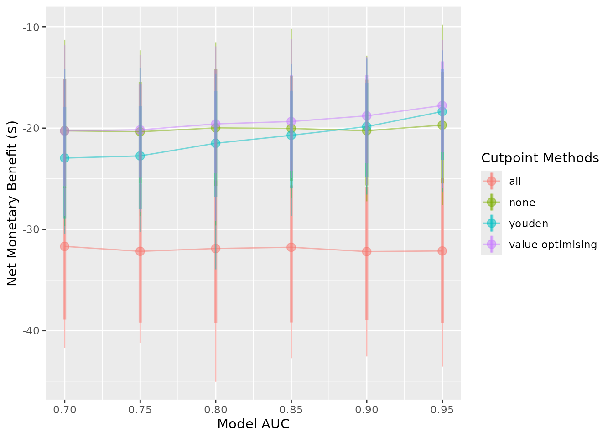

Introduction
predictNMB can be used to evaluate existing or hypothetical clinical prediction models based on their Net Monetary Benefit (NMB). This can be relevant to both prognostic and diagnostic models where a cutpoint (AKA, probability threshold) is used to generate predicted classes rather than probabilities. While it is often beneficial in clinical settings to present the user with a predicted probability, it may be helpful to simulate the effect of the decision arising from this probability. For example, in a hospital setting, a user might want to specify the probability threshold for a clinical prediction model that predicts inpatient falls at which best practice suggests providing a fall-prevention intervention over non-treatment as the default strategy. By weighing the NMB of these decisions, users can assess the impact of the model and the suggested threshold prior to implementation.
predictNMB was born out of related work (Parsons et al. 2023) that investigates cutpoint selection methods that maximise the NMB and includes several options for inbuilt and user-specified cutpoint selection functions.
library(predictNMB)
library(parallel)
set.seed(42)What’s being simulated?
When do_nmb_sim() is run, many datasets are created, and models are fit and evaluated based on their NMB. To evaluate NMB, the user is required to specify functions that define each square of the confusion matrix, which arises from binary classification:
- TP: True Positives, correctly predicted events that lead to necessary treatment
- TN: True Negatives, correctly predicted non-events that avoid unnecessary treatment
- FP: False Positives, incorrectly predicted positives that lead to unnecessary treatment
- FN: False Negatives, incorrectly predicted non-events that lead to a lack of necessary treatment
These are presented as a function so that we can repeatedly sample from it to get uncertainty estimates. We might want to sample from a distribution for uncertain parameters (for example, TP and FN) or use constants for parameters we are certain of (here, TN and FP). The function returns a vector representing each square of the matrix when called.
Example function
nmb_sampler <- get_nmb_sampler(
wtp = 28033,
qalys_lost = function() rnorm(n = 1, mean = 0.0036, sd = 0.0005),
high_risk_group_treatment_cost = function() rnorm(n = 1, mean = 20, sd = 3),
high_risk_group_treatment_effect = function() rbeta(n = 1, shape1 = 40, shape2 = 60)
)
rbind(nmb_sampler(), nmb_sampler(), nmb_sampler())
#> TP FP TN FN qalys_lost wtp outcome_cost
#> [1,] -96.92150 -21.08939 0 -120.1348 0.004285479 28033 0
#> [2,] -83.06080 -19.68163 0 -109.7893 0.003916431 28033 0
#> [3,] -99.95635 -26.05527 0 -122.1050 0.004355761 28033 0
#> high_risk_group_treatment_effect high_risk_group_treatment_cost
#> [1,] 0.3687750 21.08939
#> [2,] 0.4227200 19.68163
#> [3,] 0.3947746 26.05527
#> low_risk_group_treatment_effect low_risk_group_treatment_cost
#> [1,] 0 0
#> [2,] 0 0
#> [3,] 0 0Every time we run this function, we get a new named vector for the NMB associated with each prediction. We can inform the distributions that we sample from based on the literature for the specific clinical prediction model at hand. See the detailed example vignette for a more in-depth description of using estimates from the literature.
In this example function, the value returned for the True Negative (TN) is zero. This may reflect a scenario where patients categorised as low risk are not given any treatment and do not experience the event being predicted (e.g. a fall) so do not have those associated costs either. The False Negative (FN) is the most negative value; this is because this reflects the worst possible outcome: the patient experiences the event and no intervention was provided to reduce its rate or the effect of its associated costs. The True Positive value is similar to the FN, but is not as negative, because the patient received the intervention and this reduced the associated costs, possibly by reducing the rate of the event. These two classifications have uncertainty associated with them since the costs associated with the outcome are uncertain. This is unlike the False Positive (FP), which has a fixed cost of $20. This may be realistic when there are set costs for providing the intervention. For example, if the intervention is to conduct a falls education session with the patient, this may have an exact, known cost. See the detailed example vignette for further description and an example of how to decide on which values to use.
Since we would expect to use our best estimates, in this case, the expected value of the NMB associated with each prediction for an actual model (and not take a random sample from its underlying distributions), we will make a separate function for the purpose of obtaining the cutpoint, separately from the one we used (above) to evaluate it.
We can use the same code to create the function with get_nmb_sampler() but use use_expected_values = TRUE so that it gives us the expected values for each rather than resampling from the underlying distribution each time it’s evaluated.
nmb_sampler_training <- get_nmb_sampler(
wtp = 28033,
qalys_lost = function() rnorm(n = 1, mean = 0.0036, sd = 0.0007),
high_risk_group_treatment_cost = rnorm(n = 1, mean = 20, sd = 5),
high_risk_group_treatment_effect = function() rbeta(n = 1, shape1 = 40, shape2 = 60),
use_expected_values = TRUE
)
rbind(nmb_sampler_training(), nmb_sampler_training(), nmb_sampler_training())
#> TP FP TN FN qalys_lost wtp outcome_cost
#> [1,] -91.98138 -31.43323 0 -100.8563 0.003597771 28033 0
#> [2,] -91.98138 -31.43323 0 -100.8563 0.003597771 28033 0
#> [3,] -91.98138 -31.43323 0 -100.8563 0.003597771 28033 0
#> high_risk_group_treatment_effect high_risk_group_treatment_cost
#> [1,] 0.3997178 31.43323
#> [2,] 0.3997178 31.43323
#> [3,] 0.3997178 31.43323
#> low_risk_group_treatment_effect low_risk_group_treatment_cost
#> [1,] 0 0
#> [2,] 0 0
#> [3,] 0 0These inputs can be passed to screen_simulation_inputs() under the parameters fx_nmb_training and fx_nmb_evaluation, to be evaluated in each simulation.
do_nmb_sim()
do_nmb_sim() does a single simulation with a set of inputs for the hypothetical model and NMB-related functions. For the model, we need to know the sample size for training and evaluation sets, the model’s discrimination (Area Under the Receiver Operating Characteristic Curve, also known as the Area Under the Curve, or AUC) and the event rate of the outcome being predicted. To create this model, the specified AUC is transformed to a Cohen’s D value (Salgado 2018). A single predictor variable for the negative events is sampled from a standard normal distribution (mean = 0; standard deviation = 1) and the positive events have theirs sampled from a normal distribution with a mean equal to the calculated Cohen’s D value and standard deviation of 1. These data are then used to fit a logistic regression model with a single predictor and intercept term.
Note that it may take some time to run the simulation. (The one below may take up to a minute, depending on your computer’s performance.)
We have used show_progress = TRUE so that this progress is displayed but, by default, this progress bar is not shown.
nmb_simulation <- do_nmb_sim(
sample_size = 1000,
n_sims = 500,
n_valid = 10000,
sim_auc = 0.7,
event_rate = 0.1,
fx_nmb_training = nmb_sampler_training,
fx_nmb_evaluation = nmb_sampler,
show_progress = TRUE
)
nmb_simulation
#> predictNMB object
#>
#> Training data sample size: 1000
#> Minimum number of events in training sample: 100
#> Evaluation data sample size: 10000
#> Number of simulations: 500
#> Simulated AUC: 0.7
#> Simulated event rate: 0.1We can access simulation outputs like NMB and cutpoints directly from our simulation object, and choose strategies to examine further using this list. This is useful to examine histograms or get summary values. For example, our current default strategy might be to treat all, which is the same as setting our probability threshold for treatment to 0:
hist(
nmb_simulation$df_result$all,
main = "Simulation results - treat all",
xlab = "Net monetary benefit (NMB)"
)
summary(nmb_simulation$df_result$all)
#> Min. 1st Qu. Median Mean 3rd Qu. Max.
#> -35.06 -28.18 -26.02 -26.16 -23.99 -16.90The simulation under the various cutpoints can be visualised using autoplot(). The default is to visualise the distributions of NMB across all (500) simulations. In the plot below, the spread (light blue) shows the variability in results due to repeated simulations. The median is represented by the dark blue line in the center of each distribution. Here, we use theme_sim() to reduce clutter on these plots.
Treating all looks like a bad option here. The rest are relatively similar at this AUC and event rate, with an edge to treat none or the models using either the value optimisation or cost minimisation cutpoint method.
We have options to include multiple cutpoint methods, and the default is to use all of the available inbuilt methods as well as the treat-all and treat-none strategies. We can specify which methods are shown in the plots when creating the plot. (For more details on plotting, see the summarising results vignettes.)
get_inbuilt_cutpoint_methods()
#> [1] "all" "none" "value_optimising" "youden"
#> [5] "cost_minimising" "prod_sens_spec" "roc01" "index_of_union"
autoplot(nmb_simulation, methods_order = c("all", "none", "youden")) + theme_sim()We can also use this same plotting function to visualise cutpoints or the incremental net monetary benefit (INB) if we have a known reference strategy, in this case, treat-all:
Compared with treat-all, every alternative looks better, but treating none or using value-optimising/cost-minimising looks the best.
We can compare the NMB for each cutpoint method, as before, by accessing the object directly:
head(nmb_simulation$df_result)
#> n_sim all none value_optimising youden cost_minimising
#> 1 1 -22.22199 -8.186313 -8.208747 -12.99218 -8.201596
#> 2 2 -27.02869 -8.614284 -8.613603 -13.48818 -8.630615
#> 3 3 -26.38041 -10.109025 -10.106997 -13.61983 -10.114800
#> 4 4 -25.67286 -10.411186 -10.447631 -13.64471 -10.410777
#> 5 5 -26.38019 -12.860529 -12.866956 -15.27964 -12.866524
#> 6 6 -25.37463 -9.907368 -9.886667 -13.08035 -9.904925
#> prod_sens_spec roc01 index_of_union
#> 1 -12.99218 -12.99218 -12.99218
#> 2 -15.04459 -15.04459 -15.04459
#> 3 -14.07576 -14.07576 -14.07576
#> 4 -14.70168 -14.70168 -14.90180
#> 5 -15.27964 -15.27964 -17.83948
#> 6 -13.94385 -13.94385 -13.94385… and do the same for our selected cutpoints:
head(nmb_simulation$df_thresholds)
#> n_sim all none value_optimising youden cost_minimising prod_sens_spec
#> 1 1 0 1 0.4224814 0.08633283 0.4752184 0.08633283
#> 2 2 0 1 0.5731429 0.13147073 0.4752184 0.11166643
#> 3 3 0 1 0.6834233 0.13119297 0.4752184 0.12219263
#> 4 4 0 1 0.2888253 0.12131014 0.4752184 0.10847953
#> 5 5 0 1 0.4387597 0.13239494 0.4752184 0.13239494
#> 6 6 0 1 0.2824096 0.10598321 0.4752184 0.09600777
#> roc01 index_of_union
#> 1 0.08633283 0.08633283
#> 2 0.11166643 0.11166643
#> 3 0.12219263 0.12218998
#> 4 0.10847953 0.10636855
#> 5 0.13239494 0.09699308
#> 6 0.09600777 0.09600777Since we incorporated QALYs and a WTP into out NMB sampling functions, we can also create a cost-effectiveness plot with ce_plot(). For more details on ce_plot(), see the - Summarising results from predictNMB vignette.
screen_simulation_inputs()
We may want to investigate what the relative improvement in NMB is when increasing the model performance (AUC) and compare this to the treat-all or treat-none strategy. The following function assesses the required performance for the model to outperform a default strategy of treat all or treat none. In this example, cutpoints are selected using the Youden index and the cost-effectiveness approach, which maximises NMB.
To do this, we compare multiple simulations with different inputs using screen_simulation_inputs(). This function takes the same inputs as do_nmb_sim() but can take a vector of inputs rather than only a single value. Here, we pass vectors for both the sim_auc and the event_rate.
We run the simulations in parallel by creating a cluster and passing this as an argument. This can also be done to do_nmb_sim() in the same way. This can take some time — the fewer cores used, the longer it takes. For more details on running in parallel, see the parallel package.
cl <- makeCluster(2)
sim_screen_obj <- screen_simulation_inputs(
n_sims = 500,
n_valid = 10000,
sim_auc = seq(0.7, 0.95, 0.05),
event_rate = c(0.1, 0.2),
fx_nmb_training = nmb_sampler_training,
fx_nmb_evaluation = nmb_sampler,
cutpoint_methods = c("all", "none", "youden", "value_optimising"),
cl = cl
)
stopCluster(cl)For our hypothetical costed outcome, the classification model when the cutpoint is selected by maximising the Youden index, only outperforms the treat-none strategy when the model has an AUC of about 0.9. This is quite high and may be impossible when the outcome is highly unpredictable. Also, when the event rate is 0.1, rather than 0.2, we are only able the match the treat-none strategy when our model has an AUC of 0.95.
autoplot(sim_screen_obj, x_axis_var = "sim_auc", constants = c(event_rate = 0.2))
#>
#>
#> Varying simulation inputs, other than sim_auc, are being held constant:
#> event_rate: 0.2
autoplot(sim_screen_obj, x_axis_var = "sim_auc", constants = c(event_rate = 0.1))
#>
#>
#> Varying simulation inputs, other than sim_auc, are being held constant:
#> event_rate: 0.1